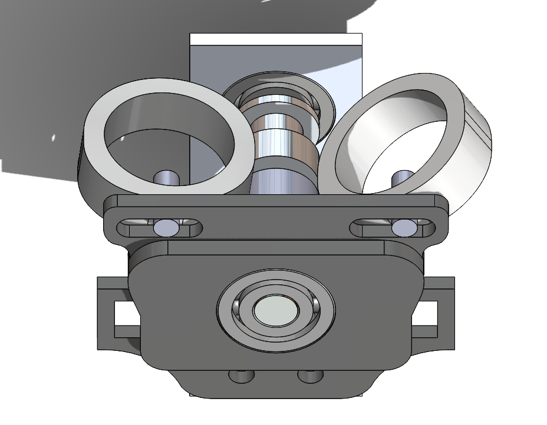

Bass Playing Robot


Introduction
I had a bass that I was never that good at playing so, I was inspired to do something about it. Rather than spending time learning how to play it, I decided to build a robot to do it for me.

The bass-playing robot works by sliding this carriage across the neck using a rail system similar to a 3d printer. The four fingers are each connected to a separate rail system which allows them to move individually across the frets. A finger plays a note when the attached solenoid activates hitting the string.
Designing
The Rail System
The two rail pieces on the front and back of the bass and are strapped in to avoid damaging the bass. They each hold the pipes and pulleys which operate the timing belt. The timing belt then moves the carriage across the neck with the PVC pipe guiding it.
I chose to use PVC pipe for the railing because it was cheap ($5 for 10 ft) and was lighter than any alternative that I knew of. One downside is that the smallest PVC pipe I could buy at the hardware store is 0.5in which makes the overall design extrude too far from the base
The Body Pulley
This part is strapped onto the body of the bass. It holds one end of the pipe and timing belt to create the rail.

note: the 3d printer I'm using is a previously broken printer that I rebuilt. As a result, the print quality is not as good as it can be.
The three arches hold belts which allows this to attach to the bass with velcro-type straps (I am currently using duct tape because I don't want to buy the straps). I am also using a Nema 17 stepper motor to run the 6mm timing belt.
The Head Pulley
This part holds the pipe and timing belt in the other direction. It has slots to adjust the distance between the pipes.

I also found out that the body of a mechanical pencil has the exact diameter of the 8mm axle I needed. So, after shaving the hexagonal sides with an X-Acto knife I used it as a replacement because I could not buy a metal axle that size.
Main Carrage
The main carriage holds the fingers and sides across the PVC railings.
The neck of the bass widens as it reaches the body so the main structure is splintered into similar parts that can expand and change their angle. The black component in the center holds the timing belts which allows the main carriage to move across the railing.

I put a rod through the center to prevent the structure from getting too slanted which can mess up which notes are being played. The slant is caused by the slight imperfections caused from my 3D printer.

This then holds up the main set of pullies that the fingers are built on. This system uses timing belts to move the fingers across the slot.


The black structure on the finger holds it at that height and keeps the circular finger angled in the proper direction.
The dark grey parts attached to each of the solanoid rods press the strings. The width of the neck starts at 1.75in and ends at 2.5in, so the strings are not always in the same position. I solved this problem by making the dark grey bit 0.625in long to press the string any distance apart.


Old Finger Design

I've gone through several versions, but this one was my favorite till I realized how weak the solenoids were too weak to move the fingers so I had to switch to the new version. I wanted the solenoids to lift fingers, but I realized I could cut out the extra parts and make the solenoids the fingers.
Electronics
I have 3 components that I needed to control. The 5 stepper motors control the pulleys, the 5 limit switches control the stepper motor positions, and the 4 solenoids press each string.
I am using 12v 5N solenoids along with the RFP30N06LE transistors, 1k ohm resistors, and diodes.
The 1.5N Nema 17 stepper motors with the DRV8825 Stepper Motor Driver (can do 1/32 steps) and the RAMPS 1.4 Control Panel
Wires
Code
Most of the code for this was simple. I just struggled with perfecting the position for each fret.
These snips make the main carriage travel to the end to record its position. It works just like the homing of a 3D printer. It was the cheaper and easier alternative to using encoders. It then goes to the first fret and stops.

This is the limit switch
I then do the same for each of the fingers. I am running them individually to prevent them from causing each other to mess up.
Then to move the fingers to the frets, I use the
Then I created a class to help me send the main carrage to specfic frets. The values of frets[] was created through testing the steps it takes to go to a fret.
I then created a similar class for the fingers.
Semi-final Look

This a video of me testing the priming step. You should see the main carrage moving across and then the individual fingers moving across. Sorry for the video quality.
As you can see 3 of the other fingers are missing. My 3D printer completely stopped working so, I am trying to fix it, so there will still be more to see.
Improvements I need to make
1. Get/make stronger solenoids. The current one is not strong enough to push the string down completely, so the sound is not as clear as I want it
2. Switch out certain parts for aluminum. The main pully system and carriage flex partially throw off the direction and causes the solanoid not to connect.
3. Reprint some parts with a better 3D printer. Parts like the PVC pipe holder are either too large or small which causes the angling and wiggling of the railing
Mechanical Design CS and Electronics